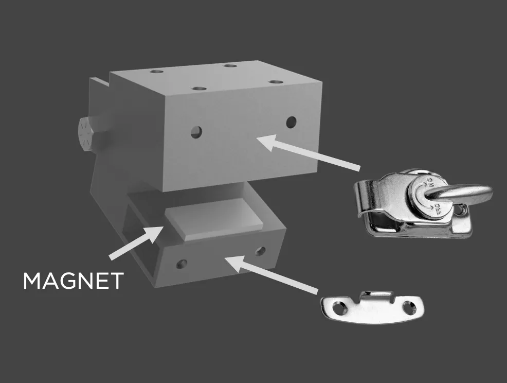
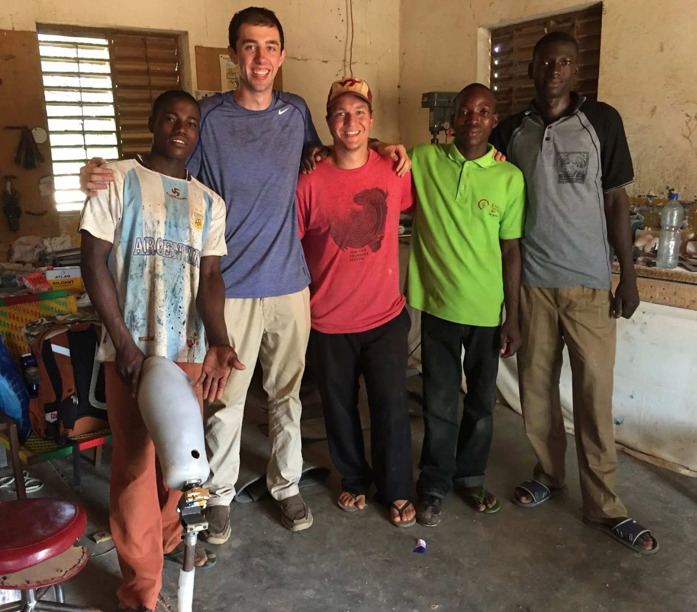
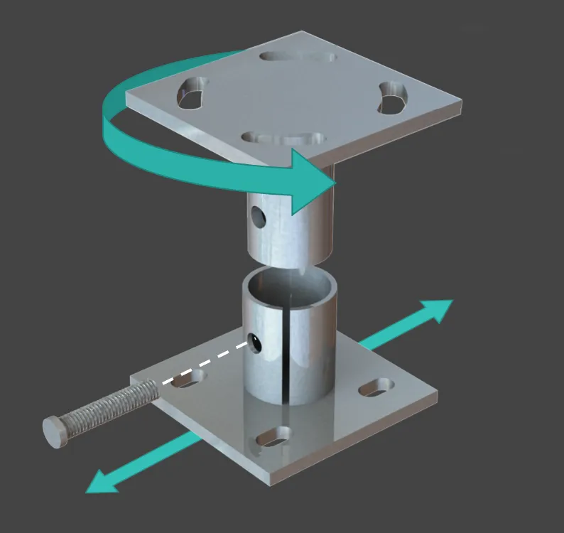

Prosthetic Knee for Burkina Faso
Our prosthetic knee design was a simple hinge joint (or clamshell) with a fairly posterior axis of rotation to increase stability. This design was mainly made from steel box tubing as well as a magnet and lock. The magnet was used inside the clamshell to catch the lower part of the knee joint when the leg was swinging forward. This ensured that the user of this knee would be placing their next step on a fully extended knee, not a partially flexed one, which is one of the main causes of falling in above-the-knee amputees. The locking mechanism was attached to the front of the knee and could be used to keep the clamshell closed (the knee fully extended). This was a request of our clients since there would be times when the terrain is so rough that it is much easier to walk with a "peg leg" than a dynamic knee joint.



The highlight of this project was traveling to Burkina Faso for three weeks to show them how to make our design. Our official client for this project was The Centre for the Advancement of the Handicapped in Burkina Faso, so I spent most of my time there working with the French-speaking shop technicians. While I was there I helped them build their first two prosthetic knees. I also delivered our manufacturing instructions which were translated into French. Additionally, we delivered a rehabilitation protocol that we wrote up with a local Prosthetist back near Messiah University, to help the Centre better treat the amputees that were going to wear our knee.